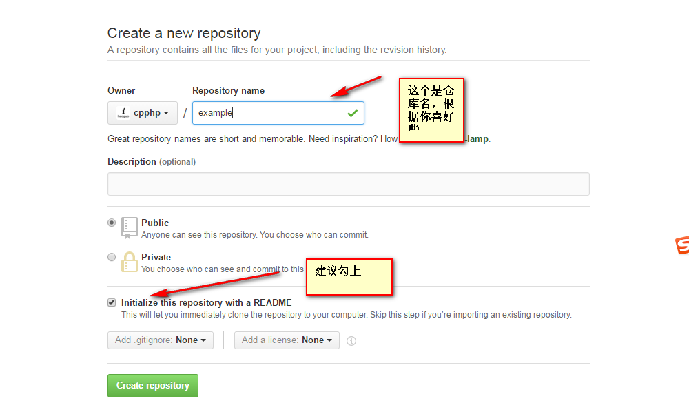
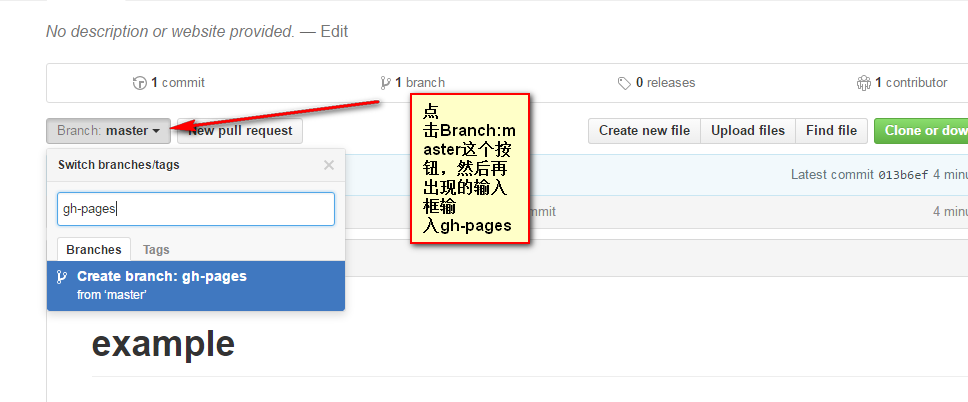

如何在Github搭建自己的个人博客
作者：周波 • 2016年10月30日
第一步：在github网站创建你的账号
网址:http://www.github.com
第二步：新建一个仓库
点击右上角的+号，然后点击New repository


点击Create repository按钮就可以新建一个仓库
接下来就是出现这个页面了。

第三步：创建gh-pages分支

输入正确后，直接回车键保存。到此为止，gh-pages分支就创建完成。并且我们的基于github的个人博客也完成了。注：我们只需要往gh-pages分支提交我们的静态代码就可以了。
以下是将github网站仓库的代码克隆到我们自己的电脑的过程：
1. 克隆你的项目(如果是Window系统，建议下载Git Bash这个软件，以下命令都是在Git Bash中输入的)
git clone URL2. 将gh-page远程分支检出
git checkout --track origin/gh-pages3. 写你的代码
4. 添加刚刚写的代码
git add .5. 提交代码到本地仓库
git commit -m '提交的时候写些注释'6. 将第三步写的代码，提交到gh-pages分支
git push origin gh-pages